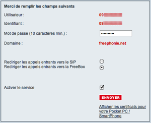

To enable SIP account in Free management interface:

Login in free management interface

chose "Gestion de mon compte SIP" item

Chose and enter a password.
This password is different from
your main Free password.
This password is the password you will enter
in symPhonie configuration

If you wish to receive calls :
check the "Rediriger les appels entrants vers le SIP" item. You will then have the choice, in symPhonie, to redirect incoming call either to symPhonie or to your freebox.
When symPhonie is not launched, or when your MacBook is in sleep mode, calls will automatically be directed to your freebox.


check the "Activer le service" item, and click on "ENVOYER"